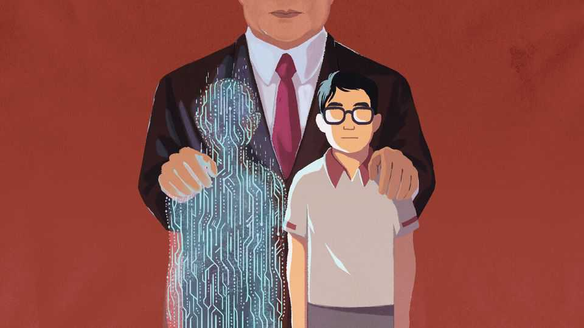

Does China really prize AI speed over safety?
In full command of its own cyberspace, China wants the same for AI

Oct 22nd 2026
“Guard the golden three seconds, guard your wallet.” In recent weeks a video of an avuncular policeman, Guo Tao, delivering this message—a warning about how to handle fraudsters on the phone—has spread widely in China. All it takes is a simple greeting for criminals to capture one’s voice and then use artificial intelligence to synthesise it for duping friends and relatives. So, as Mr Guo says, it is best to stay silent for three seconds when called from unknown numbers, to see if a real person speaks. Not bad advice. It also relates to one of the tech world’s most pressing questions: what does China think about the risks posed by AI?
Many observers believe China does not care much about the dangers. Donald Trump is one. “China will be doing absolutely nothing to stand in the way of AI,” he claimed last month, explaining his own disdain for regulation. Indeed, surveys point to overwhelming Chinese optimism about AI. In a poll by Gallup, 93% of respondents in China said it would mostly help their country, versus just 36% in America. Calls for China to work with America to slow down frontier models have been brushed aside in Beijing. “Fearmongering” serves no one, says China’s foreign ministry.
In fact, China spends an awful lot of time thinking about AI safety. Telephone fraud is just the tip of an iceberg of anxieties. China’s concerns run from criminal activity, labour displacement and national security to, yes, the loss-of-control scenarios causing sleepless nights in Silicon Valley.
This should not be surprising. The Communist Party, which obsesses about danger in almost every domain of life, has fought for years to bring cyberspace under control. Is a regime that views the internet as an existential challenge suddenly about to let AI rip? If, as in the Trump administration, one defines regulation as intrinsically a form of slowdown, then China is, in effect, slowing AI—though it would never say so. “China already has the most stringent AI rules anywhere in the world,” says Kendra Schaefer of Trivium, a consultancy based in Beijing.
The foundational document is China’s framework for the governance of AI safety. A second update came out in September. It lists 54 risks under three categories: “inherent” (models behaving in unintended ways), “application” (use by criminals) and “secondary” (social alienation). It also proposes ways to eliminate or, at least, mitigate these threats. One is to require checkpoints at which humans (remember those?) must review and, if necessary, halt AI agents before they roam too widely.
Some of the framework’s earlier ideas are already in force—for instance, AI-generated content such as audio and video must be clearly labelled. Others are likely to form the basis of new rules. Draft measures call for service providers to shut down any feature with serious problems immediately. On October 16th China also proposed curbs on exports of its most advanced AI technologies.
As AI has grown more powerful, China has paid more attention to doomsday possibilities. The original version of its safety framework, issued in 2024, made just one glancing reference to loss of control. In the newest version, that topic comes up more than a dozen times. Even so, it is possible to discern a philosophical gap. Whereas some in America fear that AI models will eventually surpass human intelligence and take control of their own evolution, the more common view in China is that AI is a transformative technology that can be harnessed and directed, not something that will slip human grasp.
Xi Jinping compares AI to the steam engine, electricity and the internet—technologies that were epoch-shaping but did not pose dangers that required a co-ordinated slowdown. With China still trailing America at the frontier of AI, Mr Xi is all the less inclined to agree to apply the brakes. As China sees it, such an agreement looks both unnecessary and self-serving for Americans.
Unsurprisingly, Chinese officials devote much bandwidth to ideology. They want to ensure that models do not contradict the party on important matters, and that new tools do not undermine its control. Yet there are more banal concerns, too, reflecting the soft paternalism of the Chinese state. Hence Mr Guo’s three golden seconds on the phone and a ban on offering virtual lovers or, for that matter, virtual relatives to minors.
China’s yen for rules may have an unintended effect. In America, where the government has a much lighter touch, companies have stepped into the breach, evaluating their own models and asking for more guardrails. In China firms are often more passive, waiting for directions from the party and government before applying controls. A review by Concordia AI, a consultancy in Beijing, of ten Chinese firms with recently released models found that just five had published safety evaluations. That suggests possible perils if models develop faster than regulators expect.
China’s rules will also fail to impress those who view its open-weight models as unavoidably dangerous. Critics fret that such models, unlike the closed ones dominant in America, can be abused more readily. Yet many in Chinese AI argue the benefits outweigh that hazard: they note that China’s open models have helped defend computer systems from rogue attacks launched by American closed models, as when OpenAI tools breached Hugging Face, an AI platform. In any case, China is already working on tougher rules to govern open models. Insiders say that new releases face exacting safety reviews before being offered to the public.
By most measures China’s AI models are a few months, or more, behind America’s in their performance. That is a big gap for such a fast-evolving technology. But do not accuse China of lagging behind America in its management of risks. When it comes to rules, controls, limits and warnings, China is in its element.■